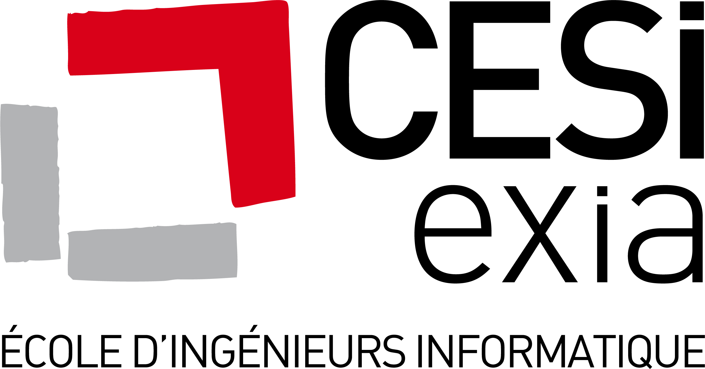

CESI – Association loi 1901 SIREN : 775 722 572 Siège social : 30 rue Cambronne 75015 Paris Tél : 01 44 19 23 45 Fax : 01 42 50 25 06 e-mail : contact@cesi.fr
//A modifier Poisson Bouge, Laboratoire de contenus web dynamiques 7 rue des Cadeniers 44000 Nantes www.poissonbouge.fr
CESI – association loi de 1901 775 722 572 30 rue Cambronne – F-75015 Paris – tél. : +33(0) 1 44 13 23 45 – fax : +33(0) 1 42 50 25 06 Déclaration d’activité enregistrée sous le numéro 11 75 47883 75 auprès du Préfet de la région Ile-de-France. Cet enregistrement ne vaut pas agrément de l’Etat.
Par “Données Personnelles”, il faut entendre toute information qui permet d’identifier une personne. Il s’agira le plus souvent d’un nom, d’une adresse, d’un numéro de téléphone ou d’une adresse électronique. Le CESI collecte des informations nominatives par l’intermédiaire notamment, de formulaires, de bons de commande, et de bulletins d’inscription.
Le CESI s’engage à mettre en œuvre tous les moyens nécessaires au bon fonctionnement du site. Cependant, le CESI ne peut pas garantir la continuité absolue de l’accès aux services proposés par le site. Les adhérents sont informés que les informations et services proposés sur le site https://exia.cesi.fr pourront être interrompus en cas de force majeure et pourront le cas échéant contenir des erreurs techniques.
Le CESI conserve les données ainsi collectées pendant une durée minimum de un an, pouvant varier en fonction du statut de la personne concernée par cette collecte. En tout état de cause, cette durée est raisonnablement fixée par le responsable du traitement, et ne peut être inférieur à la durée de la formation suivie ou de la relation entre le CESI et l’utilisateur.
Conformément à la loi « informatique et libertés » du 6 janvier 1978 modifiée en 2004, vous bénéficiez d’un droit d’accès, de rectification et de suppression aux informations qui vous concernent, que vous pouvez exercer en vous adressant à cil@cesi.fr ou en adressant un courrier à CESI, 30 rue Cambronne, 75015 Paris.
